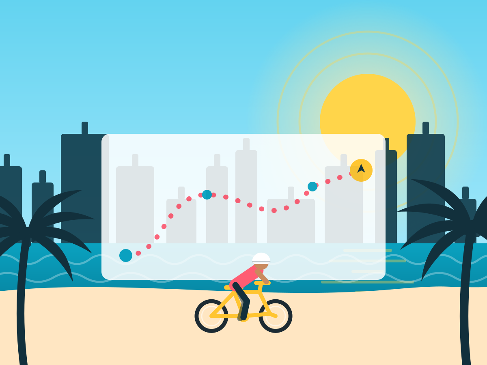

Easy

The Beachwalk Classic
Straight down the paved Beachwalk to South Pointe Park and back. Flat, car-free, shaded in stretches, and the single best first ride in South Beach.
Along the way: Lummus Park · Ocean Drive · South Pointe Pier · Joe's Stone Crab
From the shop233 14th St
Get a bike